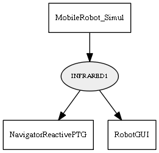

Global overview
All modules
All variables
All commands
Mission files
Pipelines
Variable: INFRARED1
Variable info:
Variable name
Short description
Who publishes it?
Who subscribes to it?
INFRARED1
Infrared ranges, as a "CObservationRange" passed through "ObjectToString".
MobileRobot_Simul
NavigatorReactivePTG
RobotGUI
Variable graph:

Detailed description:
Infrared ranges, as a "CObservationRange" passed through "ObjectToString".
Page generated by
Mooxygen 1.1.0
at Thu Jan 22 11:30:21 2015